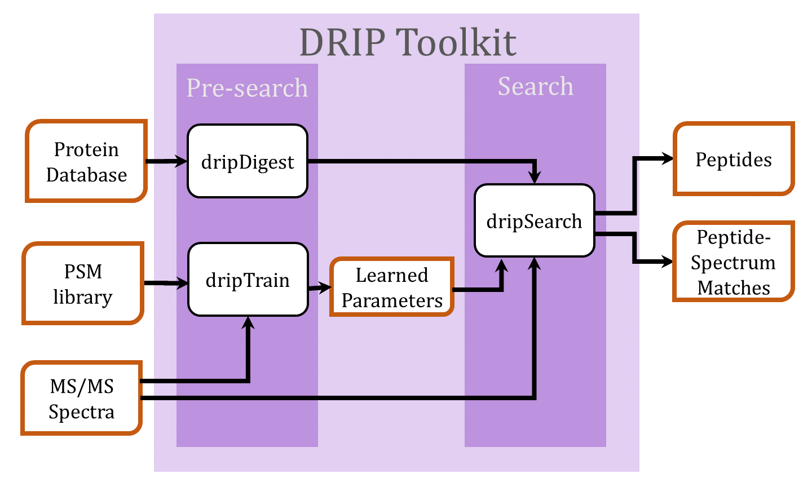

 The DRIP Toolkit utilizes a dynamic Bayesian network (DBN) for Rapid Identification of Peptides (DRIP) in tandem mass spectra. Given an observed spectrum, DRIP scores a peptide by aligning the peptide's theoretical spectrum and the observed spectrum, i.e., computing the most probable sequence of insertions (spurious observed peaks) and deletions (missing theoretical peaks). DBN inference is efficiently performed utilizing the Graphical Models Toolkit (GMTK), which allows easy alteration of the model. If you use the DRIP toolkit in your research, please cite:
John T. Halloran, Jeff A. Bilmes, and William S. Noble. "Learning Peptide-Spectrum Alignment Models for Tandem Mass Spectrometry". Thirtieth Conference on Uncertainty in Artificial Intelligence (UAI 2014). AUAI, Quebic City, Quebec Canada, July 2014.Download the DRIP Toolkit The toolkit is provided as a set of python modules modules:
Primary modules dripDigest.py Create an index of all peptides in a fasta file, for use in subsequent calls to dripSearch.py.dripTrain.py Train DRIP model parameters given a set of high-confidence PSMs. Only applicable for low-resolution MS2 spectra. dripSearch.py Search a collection of spectra against a sequence database, provided as the output of dripDigest.py, returning a collection of peptide-spectrum matches (PSMs).File formats
dripDigest dripTrain dripSearch MS2 in in Tab-delimited training PSM file (sample) in GMTK learned parameters out in FASTA (sample) in database index out in Tab-delimited text (sample) out DRIP Toolkit documentation
Please send comments and questions to halloj3@uw.edu.